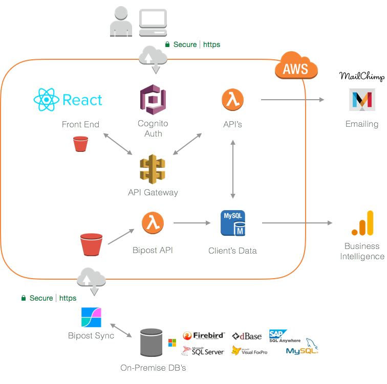

History¶
Bipost Sync was once designed to ease the use of Cloud Business Intelligence tools.
Over time we started using Bipost Sync to seamless connect on-premises ERP's to AWS cloud.
Enterprise Applications¶
We build tailored made serverless enterprise web applications connected to on-premises Relational Database Systems (RDBMS) using Bipost Sync.

Contact Us¶
We are always happy to hear about you.
Please send us an email to: info@factorbi.com